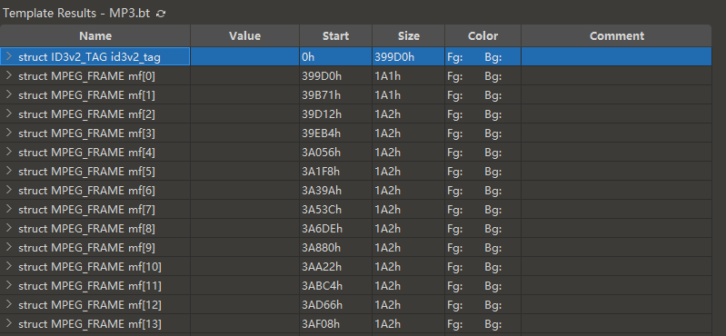
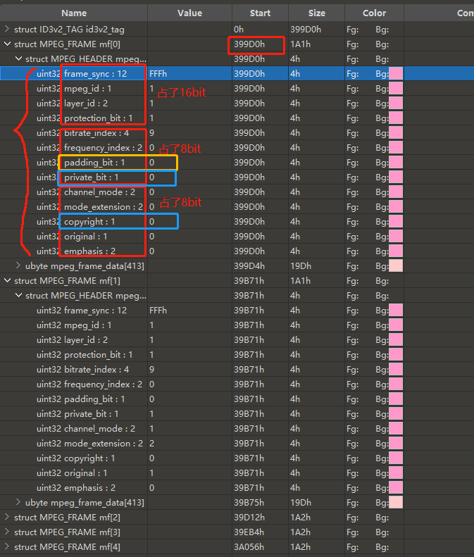
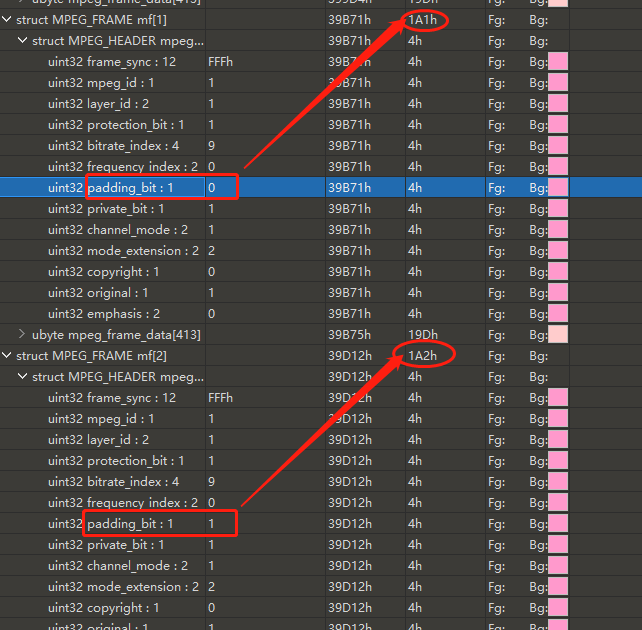
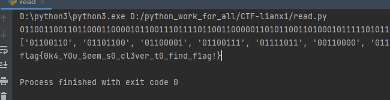
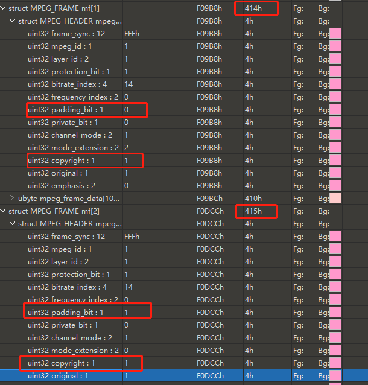
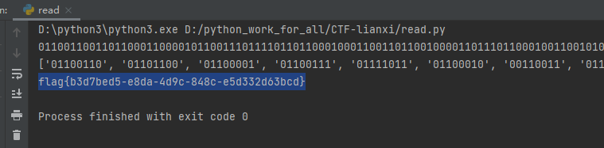

# 0x01 知识点 typedef FrameHeader {// 类型 字段名:bit数 unsigned int sync:12; //同步信息 unsigned int version:2; //版本 unsigned int layer: 2; //层 unsigned int error protection:1; //CRC校验 unsigned int bitrate_index:4; //位率 unsigned int sampling_frequency:2; //采样频率 unsigned int padding:1; //帧长调节 unsigned int private:1; //保留字 【通常藏有flag】 unsigned int mode:2; //声道模式 unsigned int mode extension:2; //扩充模式 unsigned int copyright:1; //版权 【通常藏有flag】 unsigned int original:1; //原版标志 unsigned int emphasis:2; //强调模式 }
帧长度是压缩时每一帧的长度， 包括帧头 的 4 个字节（32bit）。它将填充的空位也计算在内。
padding 的值会影响每一帧的长度（具体分析见下面的题目），因为只有 1 位，因此长度也只限于在 0 和 1 之间变化
# 0x02 题目分析将解压后的 1.mp3 文件用 010Editor 打开
可以看到一个 mp3 文件，里面基本上由 mf 数组构成。

分析详见图片

接着，可以发现，每个 mf 数组大小不一，有的是 0x1A1，有的 0x1A2

图中可知，private_bit 的数值的在 0 和 1 中变化，可以让 copyright 、 private_bit 这样的单 bit 位在 0 和 1 之间发生改变，进而影响了单独 mf 数组的大小。因此，这两位在整个 mf 数组中连续拼接可能藏有 flag 或者重要的信息，优先提取。
# 0x03 解析脚本脚本如下：
import re n = 0x399D0 + 2 target_bit = '' flag = '' file = open ('1.mp3' , 'rb' ) while n < 0x294C6A : file.seek(n, 0 ) byte = file.read(1 ) padding = '{:08b}' .format (ord (byte))[-2 ] target_bit += '{:08b}' .format (ord (byte))[-1 ] if padding == "1" : n += 0x1A2 else : n += 0x1A1 print (target_bit) textArr = re.findall(r'\d{8}' , target_bit) print (textArr) for i in textArr: flag += chr (int (i, 2 )).strip('\n' ) flag = re.findall(r'\w+\{.+\}' ,flag) print (flag[0 ])
flag

# 0x04 常用正则 (补充)①显示不可打印的字符
字符
含义
\a
报警
\b
退格
\f
换页
\n
换行
\r
回车
\t
字表符
②指定预定义的字符集
字符
含义
\d
任意一个十进制数字 [0-9]
\D
任意一个非十进制数字
\s
任意一个空白字符 (空格、换行符、换页符、回车符、字表符)
\S
任意一个非空白字符
\w
任意一个单词字符
\W
任意个非单词字符
③限定符 (？*+{n，m}.)
限定字符
含义
？
零次或一次
*
零次或多次
+
一次或多次
n 次
至少 n 次
n 到 m 次
.
匹配任意一个字符（不包含换行符）
# 0x05 再来一道翻看了几帧发现 private_bit 位都是 0，似乎并没有存储数据。但是在翻看的时候发现， uint32 copyright 这一位似乎内藏玄机 ，这一位在相邻几帧的数据有 0 有 1，查询得知这是版权位，通常不会出现不同帧有 0 有 1 的情况。
于是决定将 copyright 位的数据提取出来看看。

import ren = 0xF05A4 + 2 target_bit = '' flag = '' file = open ('2.mp3' , 'rb' ) while n < 0xC12623 : file.seek(n, 0 ) byte = file.read(1 ) padding = '{:08b}' .format (ord (byte))[-2 ] file.seek(n + 1 , 0 ) byte = file.read(1 ) target_bit += '{:08b}' .format (ord (byte))[-4 ] if padding == "1" : n += 0x415 else : n += 0x414 print (target_bit)textArr = re.findall(r'\d{8}' , target_bit) print (textArr)for i in textArr: flag += chr (int (i, 2 )).strip('\n' ) flag = re.findall(r'\w+\{.+\}' ,flag) print (flag[0 ])
flag
